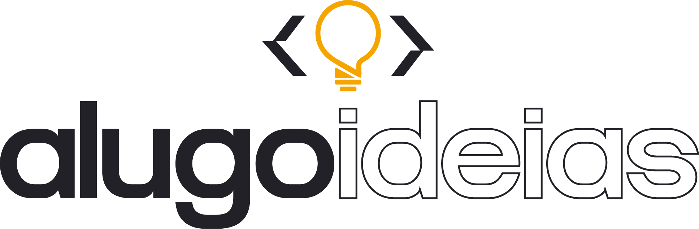

Essa configuração é feita uma vez pelo responsável pelo aplicativo. A chave do Gemini não substitui a credencial de login Google.
Próximos sete dias da agenda principal.
Os lembretes funcionam com o Aluguito aberto, o computador ligado e as notificações do Windows permitidas.
Pesquisa e imagens dependem do modelo e das cotas do seu projeto Google. No plano gratuito, evite informações confidenciais.
Consulte assuntos e prévias de até 15 mensagens.
Resumir prévia envia somente o assunto, o remetente e a prévia ao Gemini, com pesquisa web desativada.
Não configurado.
Retorno de autorização: http://127.0.0.1:35691/mcp/oauth/callback. Usa OAuth com PKCE e, quando disponível, cadastro automático do aplicativo.
Selecione as ferramentas permitidas e salve. O Aluguito pede confirmação antes de cada alteração. Atualizar permissões recarrega as ferramentas do servidor.
Guarde preferências, contexto de projetos e informações para eu considerar nas respostas.
Foco 25:00
A pausa começa automaticamente após o foco. Para iniciar outro ciclo, pressione Iniciar.
Entre 8h e 20h, fora do Pomodoro e quando o chat estiver livre. No coffee time, ele também anima o café.
Entre 8h e 20h, o Aluguito pode andar, pular ou voar no lugar enquanto a conversa está recolhida e o Pomodoro está em pausa.
As conversas e credenciais ficam protegidas neste computador.

Aluguito